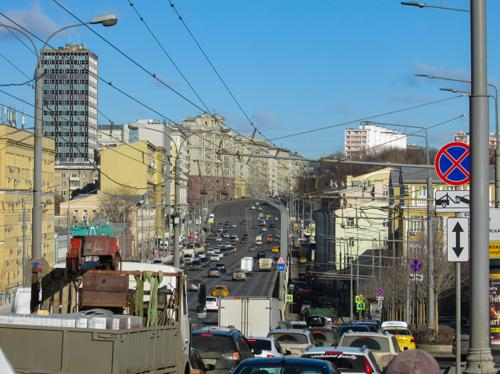
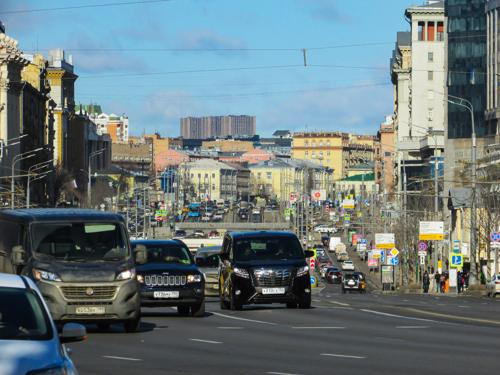

サドーヴォエ環状道路：2019冬
 写真第1枚" title="サドーヴォエ環状道路：2019冬 -> 写真第1枚（クリックして完全版を見る）">
写真第5枚" title="サドーヴォエ環状道路：2019冬 -> 写真第5枚（クリックして完全版を見る）">
写真第8枚" title="サドーヴォエ環状道路：2019冬 -> 写真第8枚（クリックして完全版を見る）">
 写真第9枚" title="サドーヴォエ環状道路：2019冬 -> 写真第9枚（クリックして完全版を見る）">